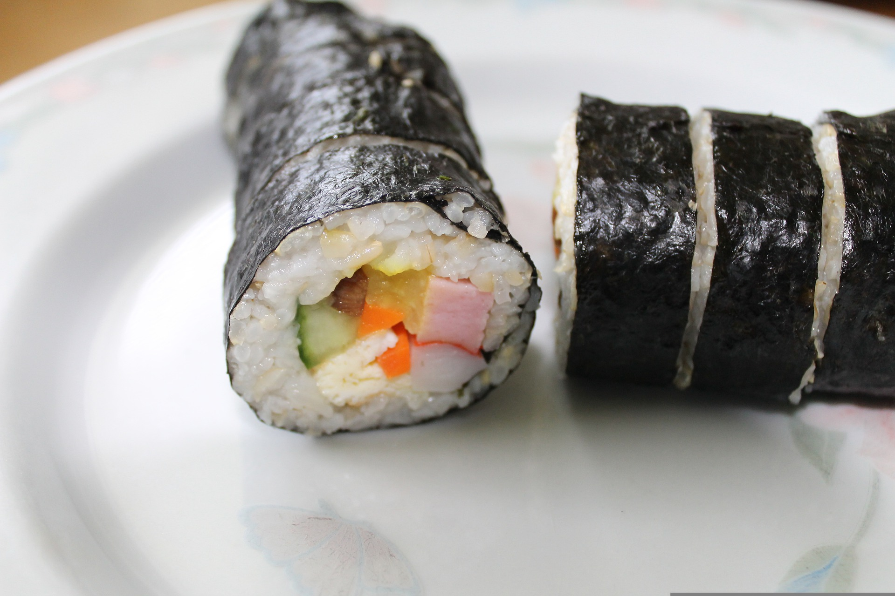
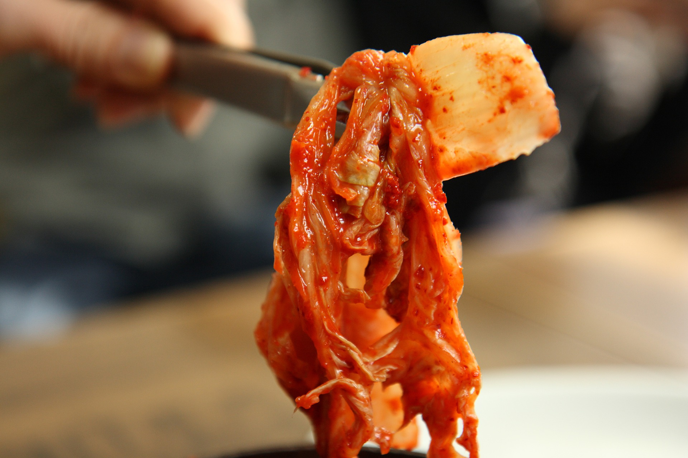

|
Tteokbokki (떡볶이)Tteokbokki, or simmered rice cake, is a popular Korean food made from small-sized garae-tteok called tteokmyeon or commonly tteokbokki-tteok. Eomuk, boiled eggs, and scallions are some common ingredients paired with tteokbokki in dishes. |

|
Japchae (잡채)Japchae is a savory and slightly sweet dish of stir-fried glass noodles and vegetables that is popular in Korean cuisine. |
|  |
Kimbap (김밥)Gimbap/Kimbap, also romanized as kimbap, is a Korean dish made from cooked rice and ingredients such as vegetables, fish, and meats that are rolled in gim—dried sheets of seaweed—and served in bite-sized slices. The origins of gimbap are debated. |
|  |
Kimchi (김치)Kimchi, is a traditional Korean side dish of salted and fermented vegetables, such as napa cabbage and Korean radish. A wide selection of seasonings are used, including gochugaru, spring onions, garlic, ginger, and jeotgal, etc. Kimchi is also used in a variety of soups and stews. |